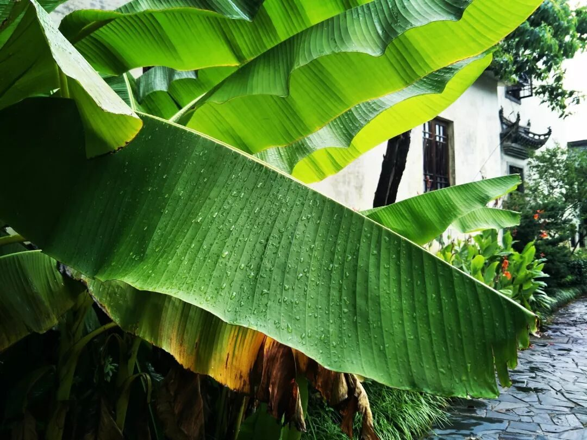
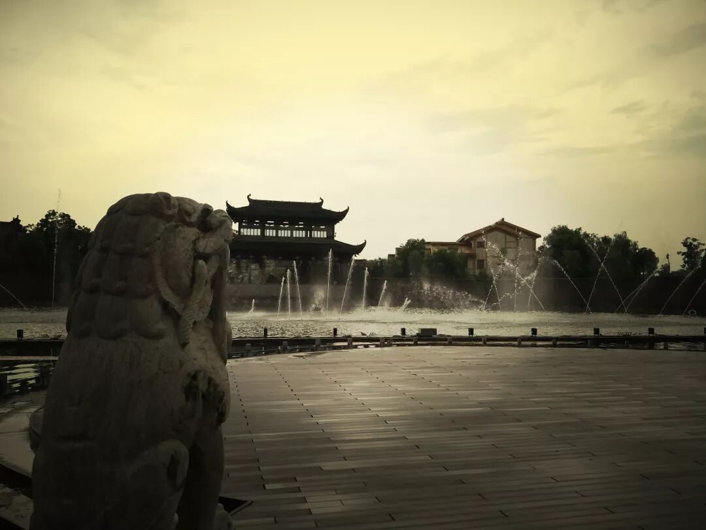
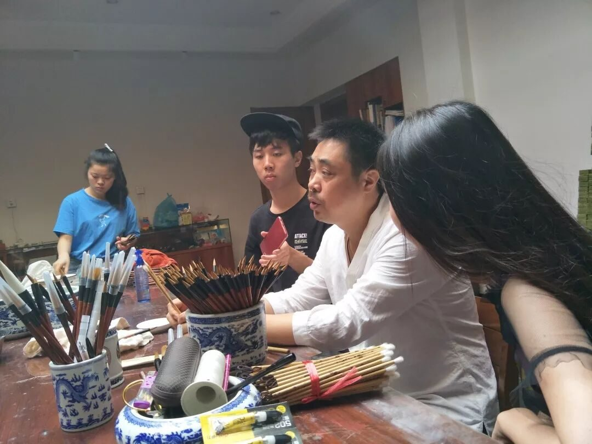
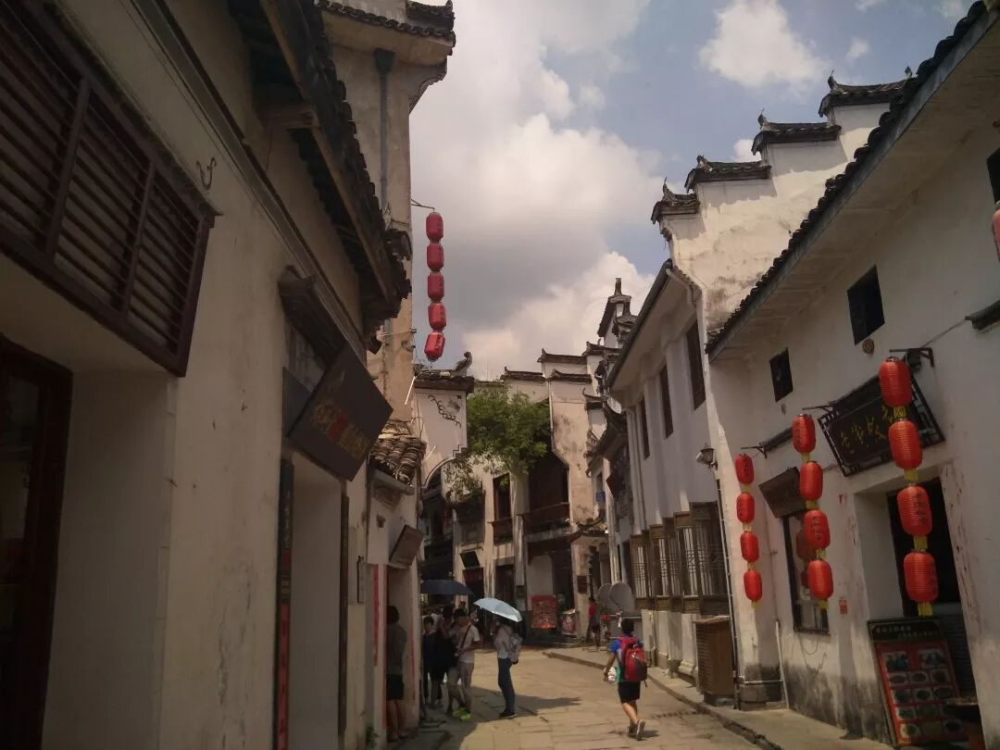
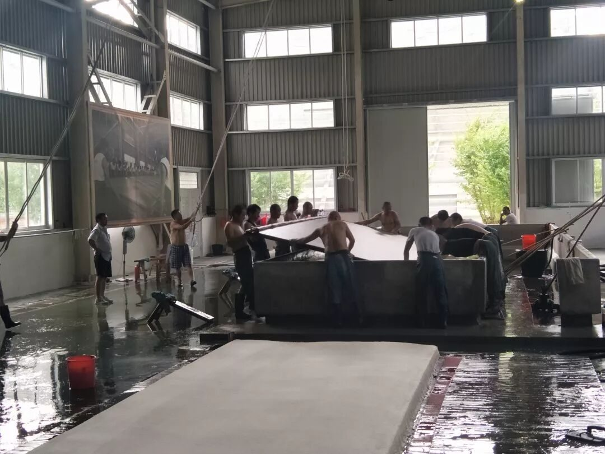
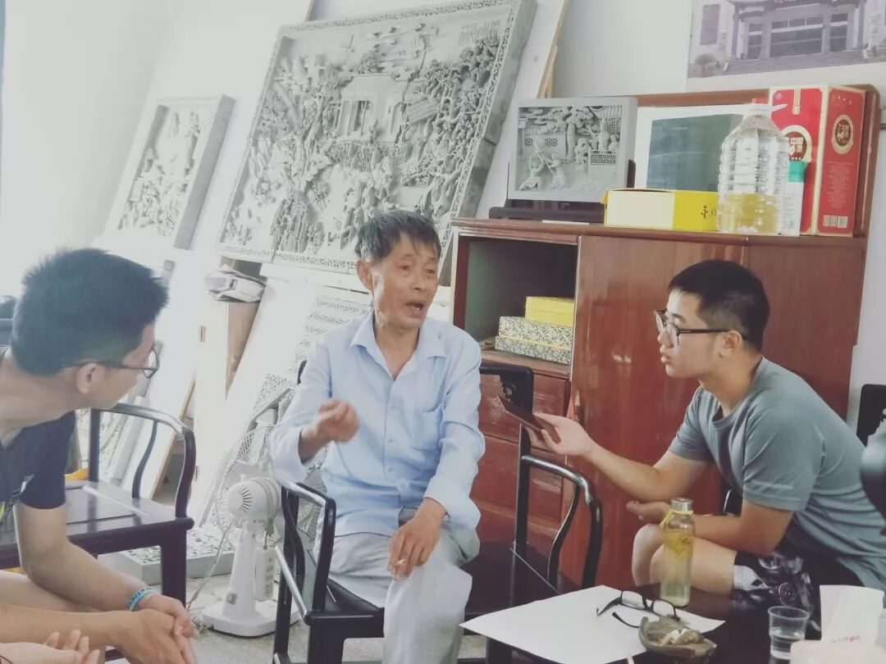
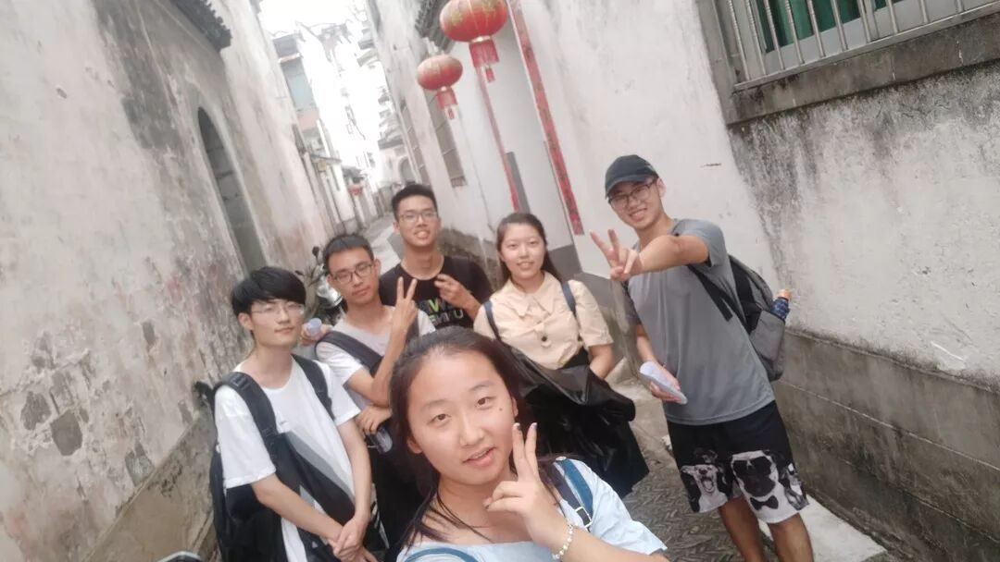

【素笺寄情·七】一溪水墨一城韵，一山风致一路情

【素笺寄情·七】
一溪水墨一城韵
一山风致一路情
关于故乡，只有离开了最初的地方以后，你再回来，才能意识到她真正的财富在哪里，余华在“朗读者”上如是说。徽州，“东南邹鲁”，“文献之邦”，自古便沉淀着许多辉煌灿烂的文化。身为安徽人，此行再走近徽州的内里，于似曾相识之外更有一股别样的新奇与慨叹。

走过这六日时光，也曾举头凝望巷头的残云落日，也曾抬脚轻踏湖上的石墩砖桥，也曾观一雕一琢领略徽雕之灵秀，也曾闻松烟檀香品读笔墨之隽逸。潺潺流水越过村庄，越过山丘，越过晾晒着青檀树皮的山脚，越过淅沥小雨下的老街一侧，最后裹挟着行者们的记忆，酿成醇香的酒，流进我们一篇篇的故事里。

纵观三地，留给我最深印象的，除去集文化大成的博物馆，便是在普普通通的地方却有着传奇故事的那些匠人。宣纸文化园里数十年如一日的捞纸工周东红、砖雕厂里仍旧夜里三点起床绘制图纸的方新中老师傅、老街里代代传承，一心希望改良毛笔制作工艺的杨文老师。他们矗立在文化传承的一线，把责任揽在肩上，把技艺传给后人。

自安徽博物馆中的徽派建筑到纵横的徽商，从文房四宝说起数千年的文明史，我们徜徉在星空馆的二十八宿之下，心中默默感叹之后也在馆内寻觅起问卷调查的对象。其中虽有些波折，但终究有所收获。望着大家专心答题的模样，时不时提醒着的我们嘴角渐渐扬起一个微小的弧度。让更多的人了解非遗，正是将它们传承下去的起点，此行能够把我们心中所想传给更多的人，便是我们最小的一丝期望。

泾县，山水小城，路边鲜有现代化的高楼，但恰恰以最原始的面貌展现给我们千年宣纸的不朽工艺。烟雨笼润着泾川，山泉洗涤着草檀。春去秋来，寒来暑往，历经风霜雨雪，岁月淘洗，檀皮与稻草粉身碎骨，百炼为纸。一脉若水，流传着千年不绝的古老技艺，连接着割舍不断的民族血脉。厂房里此起彼伏的呼喝，捞纸与揭纸车间翻飞的臂膀，展示出宣纸匠人们内心无法割舍的那一份热爱，震动着我们的心。

提及歙县，就不能不提起方新中老先生。“捧着一颗心来，不带半根草去”如同门前所刻陶行知的这句话一般，这位心怀赤子之心的老先生以最纯粹的情怀来对待着自己坚守一生的古老技艺。他说：把徽州砖雕传承下去，这是我的责任和目标。采访过程中，队员们心有所思，提出了许多问题，解开疑惑的同时也惊讶于方老画图时细腻的笔触和完成一幅大型砖雕所需时间之长。同之后老街那位传承徽笔制作技艺的杨文先生一样，与时俱进、追求卓越，传达了两人对非遗在现代传承与发展方面的深切希望，也揭示出两位沉浸技艺数十年的匠人对未来的无限希冀。

初入行者，从宣传开始工作，到最终成为文字组的一员，用自己的笔触记录下实践过程中的一点一滴，也曾在房里踱步思索，也曾因困倦在写完文字前就进入了梦乡。队员们家处天南海北，但却心怀一份共同的期盼。非遗传承，路阻且长，文化苦旅，不过刚刚开始。能在这个夏天遇见这样一群人，回味时有如江上之清风，拂面而来，吹散一身疲态与风尘。少年游，风雨兼程过山丘，上层楼，不负韶华锦绣。
图片｜沈华，盛暘
文案｜徐信步
排版｜潘雯雯
审核｜应雨珊，潘雯雯
长按扫码关注我们